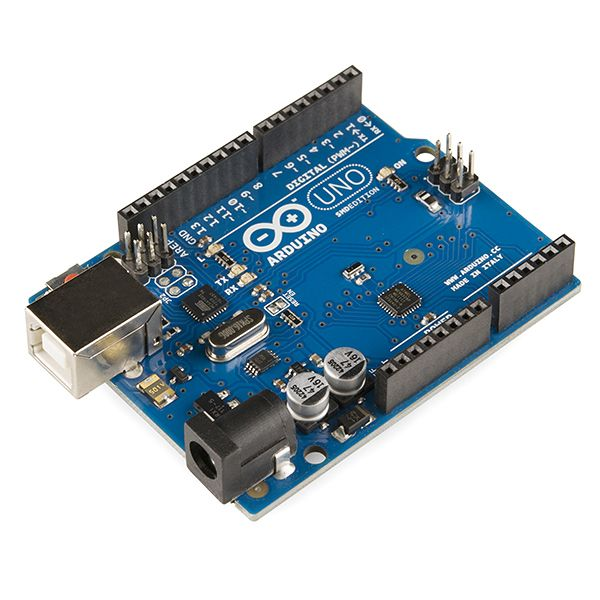
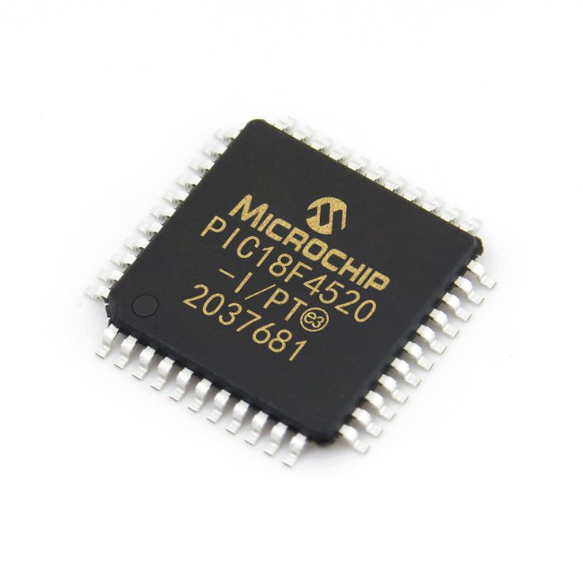
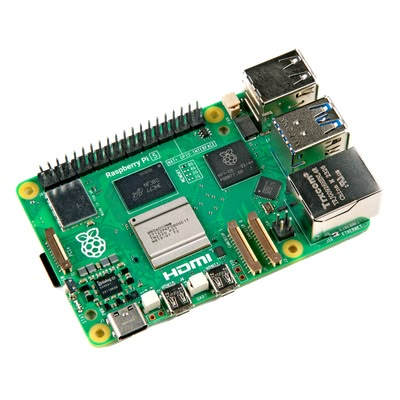

Sistema embarcado é um computador completo projetado para executar uma função ou tarefa específica, dentro de um sistema maior. Diferente de um computador comum, ele é dedicado a um propósito único e costuma operar de forma autônoma, sem intervenção humana constante.

Ele é composto por hardware (microcontroladores, sensores, circuitos) e software (programação) integrados. Por isso, é compacto, eficiente e consome pouca energia.
Todo sistema embarcado possui elementos fundamentais:

Quase todos os dispositivos eletrônicos modernos contêm sistemas embarcados. Veja os principais exemplos:
Máquinas de lavar, micro-ondas, geladeiras e fornos possuem controle digital baseado em sistemas embarcados.
Sistemas de freio ABS, injeção eletrônica, airbags e painéis digitais são todos controlados por sistemas embarcados.
Relógios digitais, alarmes, câmeras de segurança e lâmpadas inteligentes dependem de sistemas embarcados.
Aparelhos como monitores cardíacos, bombas de infusão e equipamentos de diagnóstico usam essa tecnologia.
Robôs, sensores de fábricas e controladores de máquinas operam com sistemas embarcados em tempo real.
Satélites, foguetes e drones dependem de sistemas embarcados para navegação e controle preciso.

Esta é uma das áreas mais promissoras da tecnologia! Com o crescimento da Internet das Coisas (IoT), cada vez mais objetos se conectam e precisam de inteligência interna. Profissionais que dominam programação de microcontroladores, eletrônica e integração de hardware e software são muito procurados no mercado de trabalho.
Na ETEC, a matéria de Sistemas Embarcados faz parte da base tecnológica do curso. O aluno aprende na prática a: